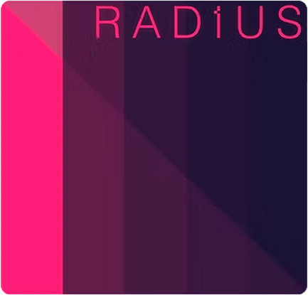
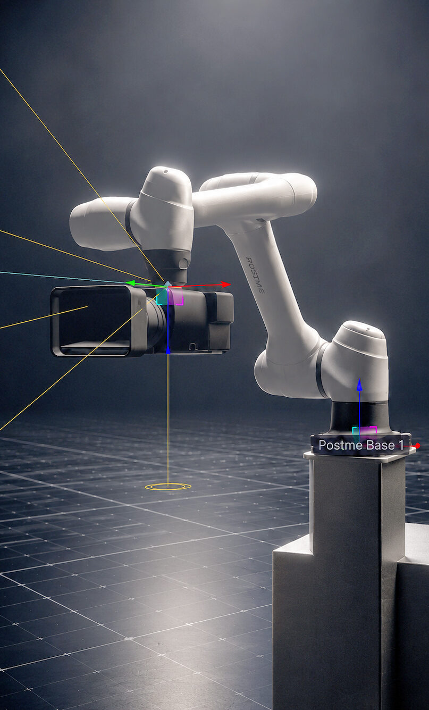
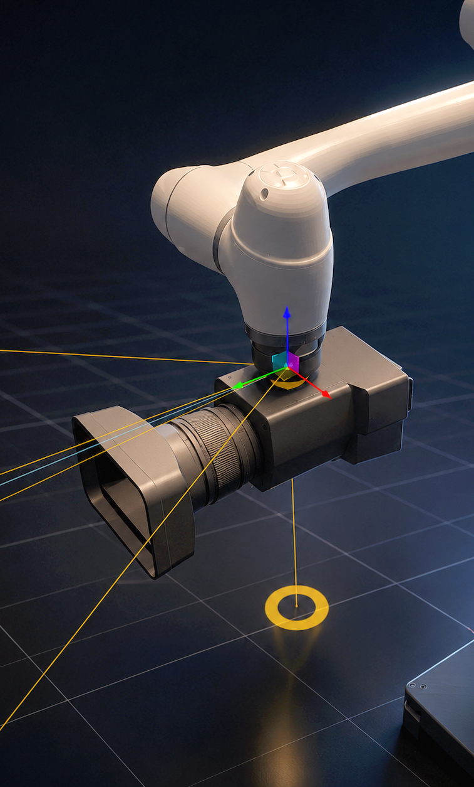
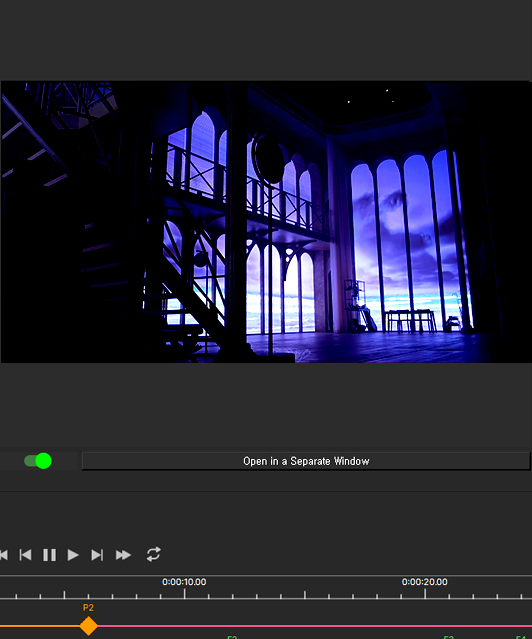
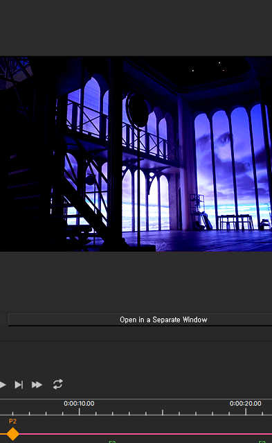
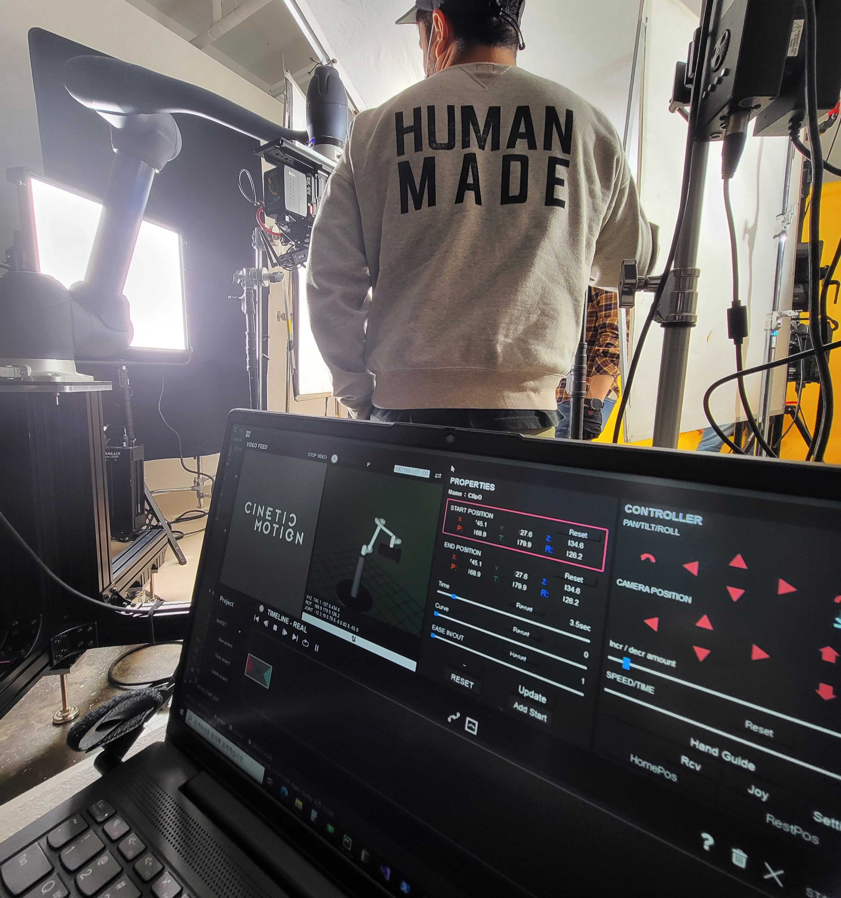

단 몇 번의 터치로 하드웨어와 소프트웨어를 가장 직관적으로 연결합니다. 키프레임, 클립, 타임라인 등 필름메이커에게 친숙한 인터페이스를 그대로 이식하여 직감적이고 강력한 모션 컨트롤을 수행할 수 있습니다.

KEY FEATURES


로봇 시뮬레이터
실제 하드웨어를 구동하기 전, 가상환경에서 모션의 궤적을 미리 시뮬레이션하여 동작 가능성과 시스템 안정성을 완벽하게 사전 확보합니다.

직관적 제어
팬, 틸트, 붐, 트랙, 더치롤 등 전통적인 촬영 기법은 물론, 이전에는 구사할 수 없었던 독창적인 카메라 무빙까지 손쉽게 구현할 수 있습니다.

타임라인 컨트롤
상용 영상 툴과 동일한 키프레임 및 타임라인 방식으로 별도의 학습 없이 로봇을 손쉽게 제어합니다.

세부 조정
섬세한 카메라 워크를 위해 로봇 모션과 키프레임 값을 정교하게 튜닝할 수 있습니다.

프로젝트 매니지먼트
복잡한 키프레임과 프로젝트를 효율적으로 관리할 수 있습니다.

라이브 모니터링
정확한 동작을 위한 라이브 모니터링은 효율적인 작업환경을 제공합니다.
